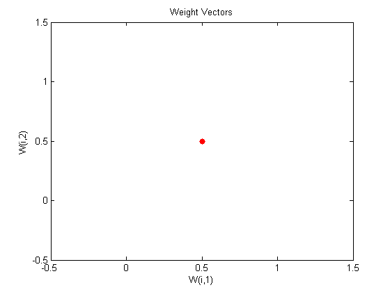
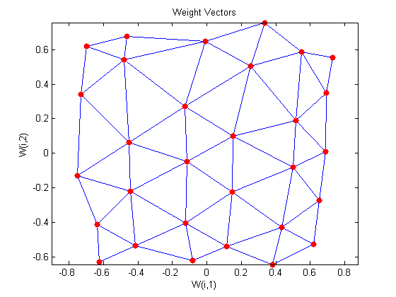

Two-Dimensional Self-organizing Map
As in DEMOSM1, this self-organizing map will learn to represent different regions of the input space where input vectors occur. In this demo, however, the neurons will arrange themselves in a two-dimensional grid, rather than a line.
We would like to classify 1000 two-element vectors occurring in a rectangular shaped vector space.
P = rands(2,1000);
plot(P(1,:),P(2,:),'+r')

We will use a 5 by 6 layer of neurons to classify the vectors above. We would like each neuron to respond to a different region of the rectangle, and neighboring neurons to respond to adjacent regions. We create a layer of 30 neurons spread out in a 5 by 6 grid:
net = newsom([0 1; 0 1],[5 6]);
We can visualize the network we have just created with PLOTSOM.
Each neuron is represented by a red dot at the location of its two weights. Initially all the neurons have the same weights in the middle of the vectors, so only one dot appears.
plotsom(net.iw{1,1},net.layers{1}.distances)
 Now we train the map on the 1000 vectors for 1 epoch and replot the network weights.
After training, note that the layer of neurons has begun to self-organize so that each neuron now classifies a different region of the input space, and adjacent (connected) neurons respond to adjacent regions.
net.trainParam.epochs = 1;
net = train(net,P);
plotsom(net.iw{1,1},net.layers{1}.distances)
 We can now use SIM to classify vectors by giving them to the network and seeing which neuron responds.
The neuron indicated by "a" responded with a "1", so p belongs to that class.
p = [0.5;0.3]; a = sim(net,p)
a = (7,1) 1